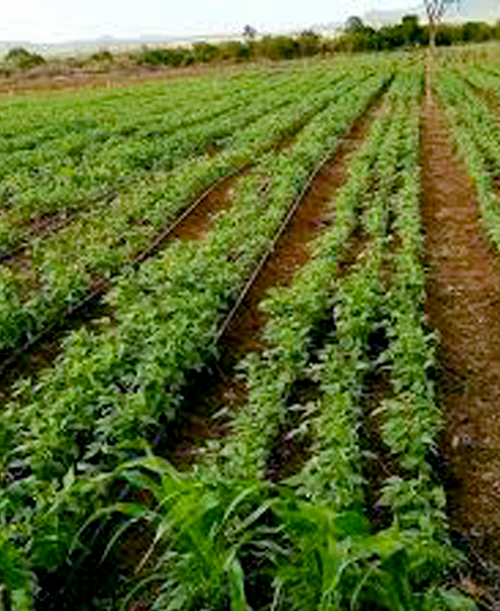
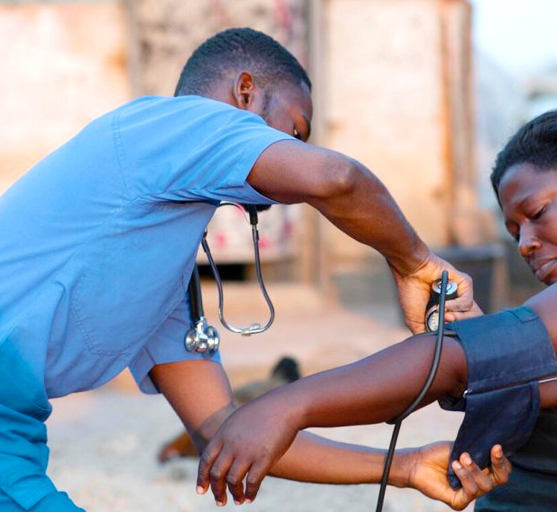
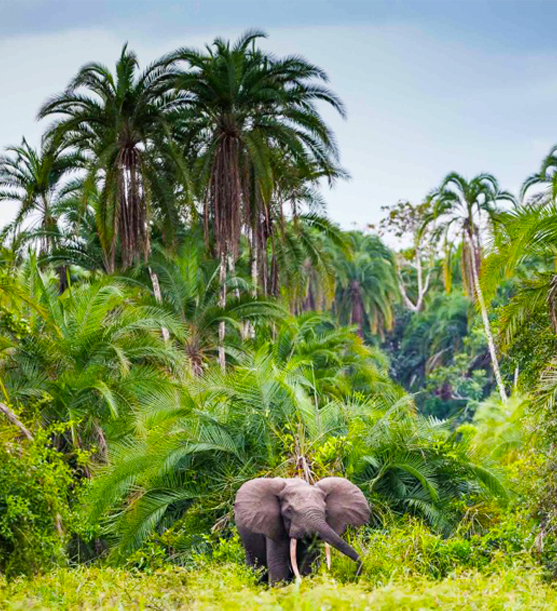

OUR PROGRAM ON AGRICULTURE
80% of Liberians rely on agriculture, yet it contributes only 38.8% to GDP.
Let's optimize and revolutionize the sector with BDI..
In Liberia, the nation’s heartbeat lies within its agricultural sector, which is rife with untapped potential and market
inefficiencies.
Numerous challenges abound, such as restricted access to modern farming methodologies, insufficient financial resources,
limited market
opportunities, and the growing impact of climate change.
These adversities often confine farmers to relentless poverty and subsistence farming cycles,
limiting their chances of substantial progress and growth. With these challenges within the agriculture
sector, BDI seeks to work with partners to mitigate the situation.

Our Agriculture Program Goals
1. Income Generation Through Sustainable Agriculture Practices:
Empower local farmers by increasing their agricultural productivity
and income by adopting sustainable farming practices and effective agribusiness models.
2. Boosting Rural Economy and Stemming Migration:
Foster rural economic growth and reduce rural-urban migration by encouraging
agribusiness entrepreneurship and creating job opportunities in rural areas.
3. Adaptive Agriculture for Climate Resilience:
Improve agricultural resilience in climate change by equipping farmers
with the skills and knowledge to adapt to changing climate conditions and mitigate associated risks.
Our Approach And Strategy For the Agriculture Sector
Agriculture & Agribusiness Program
Our Agriculture & Agribusiness program at BDI aims to transform Liberia’s agricultural sector.
We intend to train local farmers in Sustainable Farming Practices that are environmentally
sustainable, economically viable, and socially beneficial. We encourage Agribusiness Entrepreneurship,
supporting the establishment of agribusiness
ventures that add value, create jobs, and spur economic growth in rural areas.
Through our Access to Finance initiatives, we aim to improve farmers’ ability to invest in
farming, including the purchase of quality seeds, fertilizers, and modern farm equipment. Our program promotes Crop Diversification
, reducing mono-cropping risks while improving soil
fertility. We also support farmers in implementing efficient
Irrigation and Water Management practices to optimize water use and increase crop yields.
Soil Conservation and Management is a key focus area. We promote techniques that prevent soil
degradation and erosion, thereby improving long-term soil fertility and productivity.
Through our Agricultural Education and Training initiatives, we provide farmers with knowledge
of modern farming techniques, farm management, and market dynamics. We also support
Agricultural Research and Innovation to develop improved crop varieties, enhance pest
management, and optimize farming practices.
The program further supports Agricultural Marketing and Value Chain Development, helping
farmers access markets, reduce post-harvest losses, ensure fair pricing, and increase income.
Recognizing the impact of climate change, our program includes training on
Climate-Resilient Agriculture. We equip farmers to adapt to changing climate conditions and
mitigate associated risks. Through this program, farmers can increase their yields and income while improving their standard of living.
We aim to boost agriculture’s contribution to the national economy and build a strong agribusiness ecosystem
that drives sustainable growth.
By supporting agribusiness entrepreneurship, we seek to curb rural-urban migration by creating viable job
opportunities within local communities.
Your donations, collaborations, and partnerships can significantly support our mission to
transform Liberia’s agricultural sector. Together, we can reach more farmers, develop innovative solutions,
and create a sustainable and prosperous future for our rural communities.
OUR PROGRAM ON HEALTH
Despite Liberia's significant strides in healthcare, nearly 40% of the population still lacks access to essential health services,
and the maternal mortality rate remains alarmingly high at 661 deaths per 100,000 live births.
Liberia’s health sector is in urgent need of support. Hindered by limited access to healthcare, high maternal
and child mortality rates, and under-resourced public health infrastructure, the industry requires multi-pronged
interventions for practical improvements.

Our Health Program Goals
1. Enhance the efficiency of Liberia’s health sector by promoting community-based healthcare initiatives, focusing on maternal and child
health, and building capacity among health workers.
2. Improve access to quality healthcare services, particularly for women, children, and underserved communities.
3. Strengthen healthcare systems and infrastructure in underserved areas through capacity building and infrastructure development.
Our Approach And Strategy For the Health Sector
Strengthening Healthcare for Healthier Communities
Our Health program is designed to address those pressing issues, aiming to enhance the efficiency of the health sector.
The program is underpinned by four pillars: community-based healthcare initiatives, a keen focus on maternal and child health,
healthcare infrastructure development, and capacity building among health workers.
Community-Based Healthcare Initiatives: Health promotion and disease prevention start at the community level.
Our community health initiatives form the backbone of our program, addressing common health issues, encouraging
disease prevention, and promoting wellness. We aim to empower communities with the knowledge and resources to maintain
their health, prevent disease, and seek timely medical help when needed.
Maternal and Child Health: Recognizing the critical importance of maternal and child health, under this pillar,
we aim to provide essential healthcare services and support for expectant mothers, advocate for safe childbirth practices,
and ensure the well-being of infants and children. We also promote menstrual hygiene, providing access to safe and effective
menstrual hygiene management resources, and work to normalize and support this critical aspect of women’s health.
Healthcare Infrastructure Development: A robust healthcare system requires vital infrastructure. We are committed to developing
and improving healthcare infrastructure in underserved areas, ensuring more people can access quality healthcare services.
This includes improving access to clean water and sanitation facilities, supporting the development or improvement of healthcare
training centers, improving transportation infrastructure related to healthcare, such as ambulance services, supporting the
implementation of digital health information systems, etc.
Capacity Building Among Health Workers: Quality healthcare services are only possible with well-trained health workers.
We train healthcare professionals, equipping them with the skills and knowledge they need to provide excellent care.
We also understand the importance of being prepared for emergencies and providing emergency healthcare services and
preparedness training to communities vulnerable to natural disasters and emergencies.
OUR PROGRAM ON ENVIRONMENT
Liberia is home to 43% of the remaining Upper Guinean forest, a biodiversity hotspot, yet it faces severe
threats from deforestation, illegal wildlife trade, and climate change.
Liberia’s rich biodiversity is under severe threat due to deforestation, illegal wildlife trade,
and the looming specter of climate change. These environmental challenges not only affect the
wildlife but also the communities that rely on these resources for survival. With 43% of the country’s
remaining Upper Guinean forest, Liberia is a biodiversity hotspot that needs urgent attention.
Let’s protect and restore Liberia’s biodiversity with BDI.

Our Eniveronment Program Goals
1. Protect and Restore Biodiversity: Our primary goal is to protect and restore Liberia’s biodiversity by establishing protected areas,
rehabilitating degraded ecosystems, and promoting the sustainable use of natural resources.
2. Climate Change Education and Awareness: We aim to raise awareness and educate communities about the
impacts of climate change and the importance of individual and community action in mitigating these impacts.
3. Sustainable Energy Transition: We support the transition to sustainable energy by advocating for and assisting
in adopting renewable energy technologies, reducing reliance on fossil fuels, and decreasing greenhouse gas emissions.
Our Approach And Strategy For the Environment Sector
Protecting Nature, Securing Our Future
Our Conservation & Climate Change program at BDI is designed to counter environmental issues head-on.
We implement tree-planting projects for afforestation and reforestation to restore forests, sequester
carbon, and create habitats for wildlife.
Through our waste management initiative, we encourage waste reduction, recycling, and composting, and implement projects to reduce pollution and greenhouse gas emissions.
We also execute projects to conserve water, improve water use efficiency, and protect water resources. Furthermore,
we protect and restore ecosystems that provide essential services such as clean water, climate regulation, and pollination.
BDI is heavily involved in climate policy advocacy, pushing for robust local, national, and international
climate policies to reduce greenhouse gas emissions and increase resilience to climate change impacts.
Finally, we implement projects to build community resilience to climate change impacts. This includes promoting climate-smart agricultural practices,
implementing early warning systems for extreme weather events, and improving infrastructure resilience.
With our combined efforts, we strive to protect and preserve Liberia’s biodiversity, reduce the impacts of climate change,
and promote sustainable livelihoods. We aim to ensure that future generations inherit a healthier, more sustainable environment.
OUR PROGRAM ON EDUCATION
With a literacy rate of only 48.3% and challenges such as inadequate infrastructure, a shortage of trained teachers,
and high dropout rates, Liberia's education sector desperately needs support.
Our Education program at BDI is designed to tackle these critical issues head-on,
with the ultimate goal of improving access to quality education for all. We are committed
to constructing and rehabilitating schools, providing teacher training, and implementing
retention strategies to reduce student dropout rates.
Our Education Program Goals
1. Quality Education for All: We aim to improve access to quality education by constructing and rehabilitating schools,
providing teacher training, and implementing retention strategies to reduce student dropout rates.
2. Equal Access to Education: We strive for equal access for all children, regardless of gender, economic background,
or geographical location, and work to tackle educational barriers such as early marriage and child labor.
3. Emphasis on Early Childhood Education: Recognizing the importance of early cognitive and social development,
we aim to implement and support programs focusing on early childhood education.
Our Approach And Strategy For the Education Sector
Education That Transforms Lives
We believe in the power of education to transform lives and communities.
Our program focuses on ensuring the Quality of Education by improving curriculums and creating conducive learning environments.
We also place a particular emphasis on Girls’ Education to address gender disparities and empower girls through knowledge and skills.
Understanding that learning can happen at any age, our program includes Adult Literacy initiatives. We aim to equip adults who may still
need to complete formal education with essential reading and writing skills.
In our pursuit of education for all, we ensure our initiatives are inclusive for children with disabilities or special needs.
Our Inclusive Education approach adapts learning environments and teaching methodologies to cater to these unique needs.
As we prepare children for the future, we strongly emphasize Science, Technology, Engineering, and Mathematics (STEM) Education.
By encouraging and facilitating the study of STEM subjects, we prepare our students for a wide range of careers in the modern world.
We also understand the importance of non-academic skills in a child’s development. Our Life Skills Education approach equips children
with essential skills such as critical thinking, problem-solving, communication, and leadership.
Recognizing that health and education are deeply intertwined, we have incorporated School Health and Nutrition initiatives into our program.
We aim to reduce absenteeism and improve learning outcomes by improving children’s health and nutrition.
We also prioritize Education in Emergencies, providing educational opportunities in emergency and conflict situations.
This ensures that children and youth affected by crises can continue their education.
Your support is crucial in our mission to transform Liberia’s education sector. Donations, partnerships, and collaborations
can significantly contribute to our ability to provide quality education for every child in Liberia. Please help us create a future
where every Liberian child can achieve their full potential.
OUR PROGRAM ON WOMEN EMPOWERMENT
Despite significant strides, Liberian women continue to grapple with substantial gender-based obstacles.
With only 25% of parliamentary seats held by women and a prevalence of domestic violence at 39%, the need for
gender equality and women's empowerment is more critical than ever.
Our Women’s Empowerment program at BDI is designed to address and overcome these hurdles.
We are committed to ensuring access to quality education for girls and women, promoting literacy,
and supporting the continuation of schooling, even amidst challenges like early marriage and motherhood.
Our WOMEN EMPOWERMENT Program Goals
1. Quality Education for Women: We aim to ensure access to quality education for girls and women,
promote literacy, and support the continuation of schooling even amidst challenges like early marriage and motherhood.
2. Women’s Health and Reproductive Rights: We strive to promote women’s health and reproductive rights by providing
access to health services, especially reproductive healthcare, and fostering education about reproductive rights.
3. Economic Empowerment of Women: Our goal is to facilitate women’s economic empowerment by encouraging participation
in various economic activities, providing vocational training, promoting entrepreneurship, and ensuring fair employment opportunities.
Our Approach And Strategy For Advancing Women Empowerment
Empowering Minds, Empowering Girls
We believe in the power of education to transform lives and communities. Our program focuses on ensuring
the Quality of Education by improving curriculums and creating conducive learning environments. We also place a
particular emphasis on Girls’ Education to address gender disparities and empower girls through knowledge and skills.
Understanding that health is a fundamental human right, we promote Women’s Health and Reproductive Rights, providing access to health services,
especially reproductive healthcare, and fostering education about reproductive rights.
In our pursuit of economic empowerment for women, we facilitate women’s participation in various economic activities, providing
vocational training, promoting entrepreneurship, and ensuring fair employment opportunities.
As we prepare children for the future, we strongly emphasize Science, Technology, Engineering, and Mathematics (STEM) Education.
By encouraging and facilitating the study of STEM subjects, we prepare our students for a wide range of careers in the modern world.
We also understand the importance of non-academic skills in a child’s development. Our Life Skills Education approach equips children
with essential skills such as critical thinking, problem-solving, communication, and leadership.
Your support is crucial in our mission to transform Liberia’s education sector. Donations, partnerships,
and collaborations can significantly contribute to our ability to provide quality education for every child in Liberia.
Please help us create a future where every Liberian child can achieve their full potential.
OUR PROGRAM ON YOUTH EMPOWERMENT
In Liberia, over 60% of the population is under 25, making youth development a critical national priority.
However, unemployment, limited educational opportunities, and scant access to mentorship and skills training pose
significant hurdles to youth development. At BDI, we believe in the power of the youth to drive Liberia’s future.
Our Youth Development program is strategically designed to address these issues and unlock the potential of our
young people. We focus on ensuring access to quality education and providing vocational and skills training to adequately
prepare young people for the job market and various entrepreneurship opportunities.
Our Youth Empowerment Program Goals
1. Empower the youth of Liberia by ensuring access to quality education and providing vocational and skills training to prepare them for
the job market and entrepreneurship opportunities.
2. Foster youth leadership and active participation in their communities by providing platforms for their voices to be
heard and encouraging them to take up leadership roles.
3. Instill a sense of civic awareness and participation among the youth, encouraging volunteerism and fostering a sense of social responsibility.
Our Approach And Strategy For Advancing Youth Empowerment
Empowering Minds, Empowering Girls
We are committed to bridging the gap between potential and opportunity by assisting youth in finding employment
or establishing their businesses, providing mentorship, and connecting them to vital financial resources and networks.
We understand that today’s youth are tomorrow’s leaders, and we strive to cultivate the skills and attitudes necessary
for effective leadership.
Our approach to youth development is holistic, addressing the unique health needs of adolescents and young adults.
This includes mental health, sexual and reproductive health, and substance abuse prevention. We also recognize the importance
of sports and recreation, promoting these activities to improve physical fitness, build teamwork, and foster a sense of belonging.
In a digital age, we ensure that young people have opportunities to learn and apply digital skills. We promote their participation
in science and technology and harness the power of technology to enhance their learning experiences and employability. Furthermore, we engage
the youth in environmental conservation and climate change mitigation efforts, reinforcing their active role in sustainable development.
We instill a sense of civic awareness and participation among our youth, encouraging volunteerism and fostering a sense of social responsibility.
Our comprehensive program aims to mold a generation of empowered, skilled, and confident young people ready to take on future leadership roles.
Join us in shaping Liberia’s future. Your donations, partnerships, and collaborations can assist us in providing
more opportunities for our young people to thrive. We can unlock their potential and empower them to drive Liberia’s development.